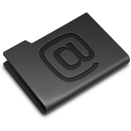

DescicloApp
Escolha o domínio alternativo
.org
.ws
.info
.as
.la
desnoticias.org
sophia.
roberto.
Ir a esta página
Editar ou criar essa página
Pesquisar
Ir a Desciclopédia
Minha página
Minha discussão
 Minhas contribuições
Páginas vigiadas
Carregar arquivo
Página aleatória
Enviar mensagem
Abrir dentro da extensão
Mudanças recentes
Mais
Boteco
Mesa de Truco
A.A. (Ajuda)
Desnotícias
Descionário
Deslivros
Despoesias
Descifras
Desentrevistas
Descitações
Deslistas
Fatos
Facebook
Twitter
Ajuda
Ocultar DescicloToolbar
Mostrar DescicloToolbar
 Minha discussão
Minha discussão
Minha discussão
Minha discussão
 Páginas vigiadas
Páginas vigiadas  Enviar mensagem
Enviar mensagem  Twitter
Twitter Deslistas
Deslistas